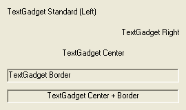

TextGadget()
语法
Result = TextGadget(#Gadget, x, y, Width, Height, Text$ [, Flags])概要
Creates a Text gadget in the current GadgetList. A TextGadget is a basic text area for displaying, not entering, text.
参数
#Gadget A number to identify the new gadget. #PB_Any can be used to auto-generate this number. x, y, Width, Height The position and dimensions of the new gadget. Text$ The text to display. Flags (optional) Flags to modify the gadget behavior. It can be a combination of the following values: #PB_Text_Center : The text is centered in the gadget. #PB_Text_Right : The text is right aligned. #PB_Text_Border : A sunken border is drawn around the gadget.
返回值
Returns nonzero on success and zero on failure. If #PB_Any was used as the #Gadget parameter then the return-value is the auto-generated gadget number on success.
Remarks
The content can be changed with the function SetGadgetText() and can be obtained with GetGadgetText(). The font of a TextGadget() you easily change with SetGadgetFont().
This gadget supports the SetGadgetColor() and GetGadgetColor() functions with the following values as 'ColorType':#PB_Gadget_FrontColor: Textcolor #PB_Gadget_BackColor : BackgroundcolorNote: This Gadget doesn't receive any user events, and GadgetToolTip() can't be used with it.
示例
If OpenWindow(0, 0, 0, 270, 160, "TextGadget", #PB_Window_SystemMenu | #PB_Window_ScreenCentered) TextGadget(0, 10, 10, 250, 20, "TextGadget Standard (Left)") TextGadget(1, 10, 70, 250, 20, "TextGadget Center", #PB_Text_Center) TextGadget(2, 10, 40, 250, 20, "TextGadget Right", #PB_Text_Right) TextGadget(3, 10, 100, 250, 20, "TextGadget Border", #PB_Text_Border) TextGadget(4, 10, 130, 250, 20, "TextGadget Center + Border", #PB_Text_Center | #PB_Text_Border) Repeat : Until WaitWindowEvent() = #PB_Event_CloseWindow EndIf

参阅
GetGadgetText(), SetGadgetText(), GetGadgetColor(), SetGadgetColor()
已支持操作系统
所有